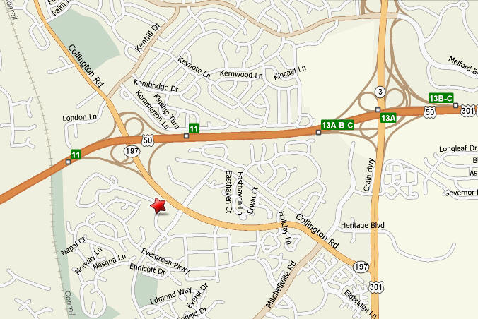

| Website Info |
Meeting Info |
Hosted by the Bowie Senior Center: The
City of Bowie, Maryland
Alternate URLs for the club:
|
- Meetings
are in person at the Bowie Senior Center.
- Next meeting will be Thursday, March
7, 2024.
- Meeting time is 12:30 pm until
approximately 2:15 pm.
|
Purpose
- Share information on the operation and maintenance of computers, mobile devices, and related software.
- Discuss and offer suggestions for the solution of computer issues.
- Disseminate knowledge of computer technology through member or guest presentations.
- Discuss other subjects of common interest.
Membership
Membership is limited to members of the Bowie Senior Center. New club members may sign up by providing verification of Center membership, name, and email address to the membership chairperson. There are no dues and there are no requirements for level of computer knowledge.
Meetings
General meetings are held on the first Thursday of each month, from 12:30 – 2:15 p.m. Meeting minutes are posted
here.
Other Activities
Many members volunteer at the Bowie Senior Center to participate in the Center’s Computer Education Program as teachers and classroom assistances. They also participate in the computer help lab on Wednesday afternoons when the Center is open.
Policies
The Bowie Seniors Computer Club Policies and Procedures are posted
here.
History
The club was founded in 1997 by a group of Center members. Read a longer version of the history
here.
Location
The
Bowie Senior Center is
located at 14900 Health Center Dr., Bowie, MD 20716.
